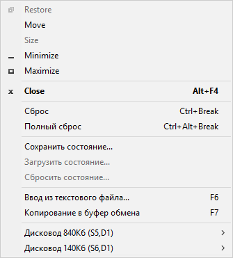

Для управления работой эмулятора используется контекстное меню, вызываемое щелчком правой кнопки мыши на заголовке окна системы или нажатием клавиши F10.

Кроме стандартных системных команд меню, оно содержит команды управления эмуляцией и команды управления отдельными устройствами.
Команды управления эмуляцией:
Пункт меню |
Действие |
|---|---|
| Сброс | Программный сброс |
| Полный сброс | Полный сброс эмулируемой системы с очисткой памяти |
| Сохранить состояние | Сохранения текущего состояния системы |
| Загрузить состояние | Загрузка сохранённого ранее состояния системы |
| Сбросить состояние | Очистка сохранённого ранее состояния системы |
| Ввод из текстового файла | Перенаправить клавиатурный ввод из указанного текстового файла |
| Копирование в буфер обмена | Сохранение текущего состояния экрана в системном буфере обмена |
| Запустить отладчик | Запустить встроенный отладчик |
При записи состояния, если присутствует ранее сохранённое состояние системы, выдаётся запрос:
При ответе "Да" сохранённое состояние заменяется текущим.
При загрузке состояния системы выдаётся запрос:
При нажатии кнопки "Да" текущее состояние системы (в том числе, содержимое памяти, регистров процессора и периферийных устройств) будет заменено сохранённым.
При выборе пункта меню "Сбросить состояние" выдаётся запрос:
При ответе "Да" сохранённое состояние удаляется с диска.
Команды периферийных устройств :
| Пункт меню | Действие |
|---|---|
Команды принтера |
|
Команды дисковода |
|
| Вставить диск | Загрузка образа диска в выбранный виртуальный привод |
| Извлечь диск | Извлечение образа диска из выбранного виртуального привода |
См. также: Работа в эмуляторе, Клавиатурные сокращения, Главное меню